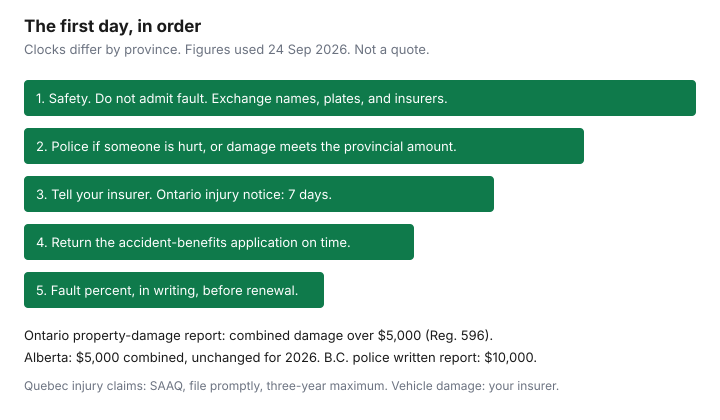

Insurance · Canada
Canadian Auto Claim Checklist: Protect Coverage and Your Record After a Collision
The expensive mistakes after a collision happen before the body shop. People leave without a plate number, skip a police report the statute required, sign a blank tow slip, or wait weeks to mention an injury. The premium effect of an at-fault claim is a separate question, already written on the claim-impact guide. This page is the checklist that protects the repair and the injury file, and then makes you confirm the fault code before the next renewal prices it. How you shop the policy, and how many years a surcharge lasts, stay on those other guides.
Disclosure: Education only. Not legal advice and not a referral to a law firm, a body shop, or a claims lender. We do not claim a partnership with any insurer. Provincial numbers below were read 24 Sep 2026. Confirm the current threshold on the official page before you decide a report is optional.
Key takeaways
- Make the scene safe, do not admit fault, and exchange information even when the damage looks minor. Police-report amounts are provincial: Ontario and Alberta use $5,000 combined; British Columbia’s police written-report amount is $10,000 aggregate.
- Tell your insurer promptly. In direct-compensation provinces you claim vehicle damage from your own insurer to the extent you were not at fault. That is a billing path, not a finding that you caused the crash.
- Do not sign a blank repair authorization. Ask what daily storage the insurer will pay before a tow yard holds the car.
- Ontario accident-benefits notice is 7 days, and the application is due 30 days after you receive the forms. Alberta’s AB-1 is on a 30-day rule, faster if you want the diagnostic protocols. Quebec bodily injury goes to the SAAQ, with a three-year maximum and a reason to file sooner.
- Get the fault percentage in writing before you accept the renewal. The years it affects the premium are the insurer’s filing, not a national statute.
Scene steps: safety, police report thresholds by province, exchange info
Stop. If anyone may be seriously hurt, if you suspect impaired driving, or if the scene is in live lanes you cannot make safe, call emergency services. Alberta’s collision page says not to move a seriously injured person, and not to admit fault, sign a statement, or accept money to forget the crash. Those scene rules are good sense in every province. A casual “I’m sorry” can be repeated later as an admission. Stick to facts.
| Province | What the official page says |
|---|---|
| Ontario | Regulation 596 sets the prescribed amount for a property-damage accident report at $5,000, amended by O. Reg. 160/24. Toronto Police describe the Highway Traffic Act duty as a report where someone is injured, combined damage is more than $5,000, or there is damage to private, municipal, or highway property. A collision reporting centre is the usual path when the cars can move and nobody is hurt. The old $2,000 figure is out of date. |
| Alberta | The province confirmed the $5,000 combined property-damage threshold unchanged for 2026 after its CPI review. Also report if anyone is injured, documents are missing, a vehicle is not drivable, or public property is damaged, including when that damage is under $5,000. Collision repairs over $5,000 need a police damage sticker. Failure to report when required can mean demerit points or a fine. |
| British Columbia | The Accident Report Threshold Regulation sets $10,000 as the aggregate amount for a police officer’s written report under the Motor Vehicle Act. That is the police paperwork threshold, not a reason to skip ICBC. Report the claim to ICBC. Call 911 for injuries or an unsafe scene. |
| Quebec | The Autorité des marchés financiers tells drivers to complete a joint report (constat amiable), available from the Groupement des assureurs automobiles, unless the police already wrote a report. Notify your insurer even if you do not intend to claim a repair. Bodily injury is a Société de l’assurance automobile du Québec file, not a private accident-benefits form. |
Wherever you are, write down or photograph: each plate, each driver’s name and phone, each insurer and policy number if it is offered, the location, the time, the weather, and the position of the cars. Photograph all four corners and the other vehicle’s plate before anyone leaves. If the other driver will not stop, you still have a hit-and-run to report. A passenger can give the details if a driver is not able to.

Notify insurer promptly; know direct compensation vs tort/no-fault context
Call your own insurer after the scene is stable, even when you think the other driver caused it. Alberta’s page says a late report, or withheld details, can make the claim harder, and that police charges are not the same thing as insurance liability. Quebec’s regulator says the contract requires you to report the accident to the insurer, including the cause, the damage, and where the vehicle is.
Who pays for the car depends on the provincial system. The claim-impact guide defines at-fault, not-at-fault, and direct compensation property damage. The claim-day version:
- Ontario. Direct compensation property damage means you claim vehicle damage from your own insurer to the extent you were not at fault, when the rules for DCPD are met. Fault for many common crashes follows the Fault Determination Rules, a chart regulation. Your percent is both the recovery and, usually, the rating.
- Alberta. DCPD has applied since 1 January 2022. You claim from your own insurer for the not-at-fault portion. The at-fault portion uses your collision coverage if you bought it. DCPD does not apply to every crash, including some crashes with an uninsured or out-of-province insurer. The province’s collision page is the list of exceptions.
- Quebec. Bodily injury is the public plan. Vehicle damage is the private policy. Insurers use the Groupement des assureurs automobiles fault chart. A collision with an animal is treated as the driver’s fault for the vehicle; you need the coverage you bought. An animal over 25 kilograms is a police report under the Highway Safety Code, as the regulator describes it.
- British Columbia, Manitoba, Saskatchewan. These are public auto systems. Use the ICBC guide and the SAAQ guide for the products. Do not describe an ICBC claim as Ontario DCPD, and do not opt out of anything by copying an Ontario endorsement number onto a public policy.
Injury benefits are a second file. Opening the vehicle claim does not open the injury claim. Say, on the first call, whether anyone was hurt, even if the answer is “sore, not sure yet.”
Rental, storage, and repair shop rights without signing blank authorizations
A tow, a yard, and a rental can cost more than the dent if you sign first and read later.
- Tow and storage. Ask the daily storage rate before the car goes to a yard you did not choose. Ask your insurer, the same day, how many days of storage they will pay and where they want the car moved. A week of unapproved storage is a bill with your name on it.
- Rental. Transportation replacement is optional on many private policies. In Ontario it is an endorsement you either bought or did not. A credit card’s rental coverage is a different contract and often excludes a vehicle that is already damaged and sitting in a claim. Ask your adjuster what daily limit and how many days you have before you reserve a car.
- The shop. Alberta’s official page is the clearest consumer statement in the country: you may have the damage estimated and repaired at the shop you choose; the insurer cannot require its shop unless it gives you written notice, within seven days after it receives your completed proof of loss, that it will repair or replace the vehicle itself. If it takes that option, it takes responsibility for the quality of the repair. A recommended shop is still allowed. A guarantee that is only the shop’s guarantee should be in writing.
- The signature. Sign a work order that lists the repairs, whether parts are new or used, and whether they are original-equipment or generic. Do not sign a blank authorization, a blank direction of pay, or a form that lets the shop add supplements without telling you. Alberta tells drivers that the signature means you are responsible for the invoiced amount. Know what the insurer has agreed to pay before the work starts, including how a supplement is approved if the shop finds more damage.
You still owe the deductible the policy names. Hiding it inside a padded invoice is fraud. One estimate is enough to start. A second estimate is for your own comparison, not a requirement to stall a drivable car in a paid yard.
Injury benefits: accident benefits applications have strict clocks
Vehicle damage can wait a day. Injury notice often cannot. See a doctor or, where the province says so, a primary health-care practitioner, and tell them it was a motor-vehicle collision so the report is labelled correctly.
| System | What to file | Clock on the official form or page |
|---|---|---|
| Ontario | Tell the insurer you intend to apply. Complete the Application for Accident Benefits (OCF-1). Medical and rehabilitation benefits remain mandatory; income benefits are a separate election. The accident-benefits guide is the coverage map from 1 July 2026. | FSRA’s OCF-1 says tell the company within 7 days of the accident, or as soon as possible if you cannot. Return the application within 30 days after you receive it. The Statutory Accident Benefits Schedule uses the same structure: notice by the seventh day or as soon as practicable, then 30 days after the forms arrive. Late files have been barred. |
| Alberta | See a physician, chiropractor, or physical therapist. File an injury report with police. Complete the AB-1 Notice of Loss and Proof of Claim. | The regulation requires the prescribed form within 30 days of the accident, or as soon as practicable if 30 days is not reasonable, subject to the diagnostic and treatment protocols. The province’s April 2024 interpretive guide tells protocol injuries (sprain, strain, whiplash-associated disorder I or II) to submit the AB-1 within 10 business days so that protocol can be used. Section B amounts other than some weekly benefits are payable within 60 days after a completed form, on the regulation’s “when moneys payable” rule. |
| Quebec | See a physician for the initial medical report. Open a compensation file with the SAAQ. Tell the private insurer about the car, not about replacing the public injury plan. | SAAQ’s compensation pages say you have a maximum of three years from the accident, the onset of injury, or the death to file. They also say to file as soon as possible. The three-year maximum is not a suggestion to wait. |
| British Columbia, Manitoba, Saskatchewan | Report the injury to ICBC, Manitoba Public Insurance, or SGI on that insurer’s form. | Use the public insurer’s current deadline. Do not file an Ontario OCF-1 with ICBC and expect it to count. |
Workplace benefits and a provincial health plan may pay some treatment first, especially in Alberta, where the collision page tells you to send eligible receipts to an extended health plan, and to the auto insurer when that plan is exhausted, missing, or does not cover the full eligible cost. Keep both explanations of benefits. Coordination of those receipts is a paperwork job, not a reason to skip the auto form.
When to involve a lawyer vs staying in first-party benefits
First-party benefits are the file you have with your own insurer, or with the public plan, for injury. They do not depend on winning a lawsuit against the other driver. For a straightforward strain, the saving is to stay inside that file: see the practitioner, submit the form on time, and answer the insurer’s requests for records. A lawyer’s fee on a small benefit cheque can be larger than the dispute.
A lawyer is worth a consultation, which you pay for or which a firm agrees to explain up front, when one of these is true:
- The insurer has denied accident benefits, cut off treatment, or missed the pay clock, and the internal complaint has not fixed it. In Ontario, benefit disputes are built for the Licence Appeal Tribunal after the claim process, not for a courthouse as the first stop.
- The injury is serious, there is a fatality, or fault is being used to reduce your vehicle and your injury outcome at the same time.
- Your province still allows a tort claim for losses the first-party benefits do not pay, and a limitation is running. Alberta’s Section B action against the insurer has a two-year commencement rule in the accident-benefits regulation. That is not a national limitations lecture. Ask a lawyer in your province for the date that applies to you.
Do not import that list into Quebec or British Columbia unchanged. Quebecers claim bodily injury from the SAAQ. The private policy is the car. British Columbia’s Enhanced Care is the injury path for most crashes; an Ontario-style lawsuit against the other driver is the wrong map. The ICBC and SAAQ guides keep those systems separate. This page does not recommend a firm and does not sell a claim.
After settlement: confirm fault coding before the next renewal
The body shop can be paid and the fault code can still be wrong. Before you accept the renewal, ask the insurer for three things in writing:
- The percentage they assigned, and the rule they used. In Ontario, ask which section of the Fault Determination Rules. In Quebec, ask how the Groupement des assureurs automobiles chart was applied. In Alberta, ask how DCPD split the at-fault and not-at-fault portions.
- Whether the claim is coded at-fault, not-at-fault, or comprehensive, and whether a claims-free discount ended even if the percentage was zero.
- How many years that code stays on the rating. There is no national statute. The claim-impact guide is the planning range people hear, and the instruction to replace it with your filing.
If the percentage is wrong, dispute it before the renewal is priced. Use the insurer’s complaint process and keep the final position letter. The General Insurance OmbudService can look at eligible auto disputes after that process. FSRA in Ontario wants the same letter for a conduct complaint. Fixing a 50 percent code that the chart calls zero is worth more than shopping a new insurer with the wrong code still on the record. A new insurer will ask about the claim. Answer with the corrected percentage, not with a hope that the old code disappeared.
A young driver’s first claim is a larger problem than the same claim on a long clean record. The young-driver guide is why you do not add a small claim to “get it over with” on a new licence. Pay a minor repair yourself only when the tests on the claim-impact page are met: your fault, no injury, and cash you can spare.
Sources & date stamps
- Ontario Regulation 596, section 11: prescribed property-damage amount $5,000 (O. Reg. 160/24). Toronto Police collision-reporting page describes injury, the $5,000 combined figure, and property damage. Used 24 Sep 2026.
- Alberta.ca, automobile collisions and insurance — $5,000 threshold unchanged for 2026; report rules; shop choice; DCPD since 1 January 2022; AB-1 steps. Used 24 Sep 2026. Automobile Accident Insurance Benefits Regulation: prescribed form within 30 days or as soon as practicable; Section B pay timing; two-year action rule against the insurer.
- British Columbia Accident Report Threshold Regulation (B.C. Reg. 47/2019): $10,000 aggregate for the police written report under Motor Vehicle Act section 249.
- Autorité des marchés financiers, what to do after an automobile accident — joint report, notice to the insurer even without a claim. SAAQ compensation pages — three-year maximum, file sooner. Used 24 Sep 2026.
- FSRA Application for Accident Benefits (OCF-1) — 7 days to say you will apply, 30 days to return the form after you receive it. Used 24 Sep 2026.
- Insurance Bureau of Canada, mandatory auto insurance requirements — private market versus public insurers. Used 24 Sep 2026.
Frequently asked questions
Do I have to call the police for a small collision?
Call if anyone is injured, if you suspect a crime such as impaired driving, or if property damage meets your province’s threshold. Ontario’s prescribed amount for a property-damage report is $5,000 combined, under Regulation 596. Alberta’s $5,000 combined threshold was confirmed unchanged for 2026. British Columbia’s police written-report amount is $10,000 aggregate. Exchange information even when no report is required, and tell your insurer.
What is the Ontario deadline to start accident benefits?
FSRA’s Application for Accident Benefits says to tell the insurer within 7 days that you plan to apply, or as soon as you can. The completed form is due within 30 days after you receive it. A late file can be barred. Injury care is separate from the premium question.
Can the insurer force me to use its body shop?
In Alberta, the province’s collision page says you choose the shop, and the insurer cannot require a specific shop unless it gives written notice, within 7 days after receiving your completed proof of loss, that it will repair or replace the vehicle itself. Do not sign a blank work order. Read your own province’s policy conditions before you treat Alberta’s rule as national.
When should I hire a lawyer?
Stay in first-party benefits for treatment while you are inside the clocks. A lawyer is a cost decision when benefits are denied, the injury is serious, or your province still allows a tort claim that matters. Quebec bodily injury is the SAAQ plan. British Columbia injury claims are mostly ICBC’s Enhanced Care. This page does not refer you to a firm.
Is this legal or brokerage advice?
No. Education only. Fault rules, benefit clocks, and repair rights are provincial. We do not claim a partnership with any insurer, body shop, or law firm.